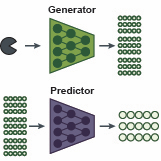

Building better protein models only matters if we can connect them to biological function. I develop methods to predict, annotate, and benchmark protein function — from fitness landscape prediction to multimodal protein–function annotation — so that protein models stay comparable, reproducible, and grounded in real-world tasks.
Publications
